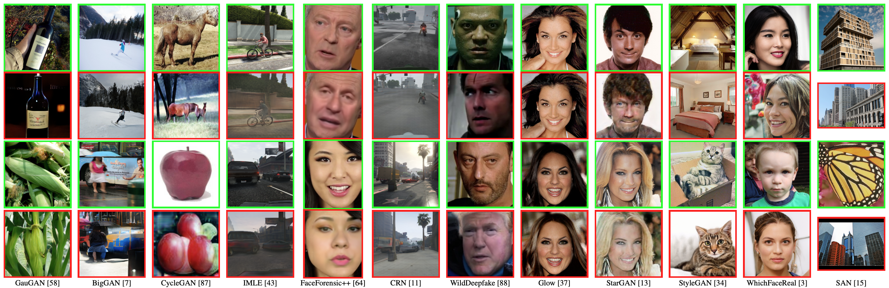
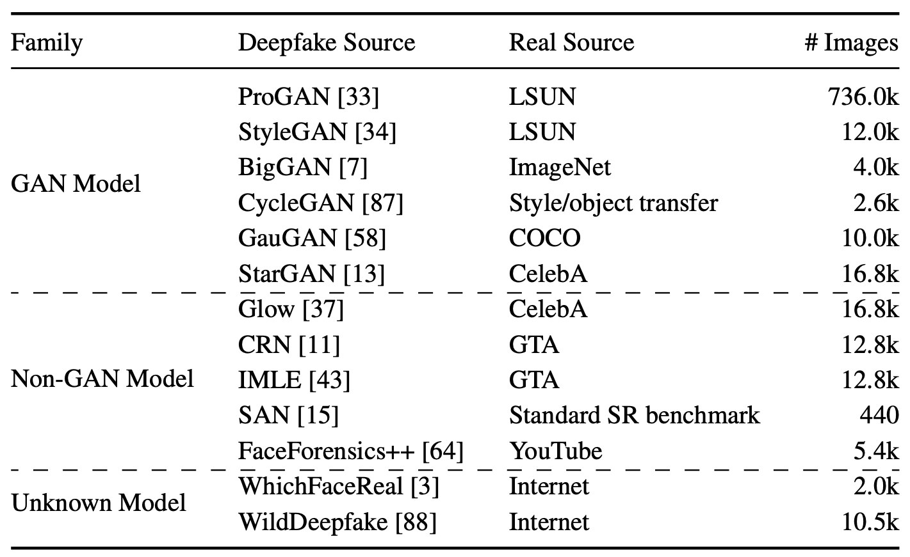

1ETH Zürich
2Singapore Management University
3Xi’an Jiaotong University
4Harbin Institute of Technology
5KU Leuven
IEEE/CVF Winter Conference on Applications of Computer Vision (WACV) 2023
Abstract
There have been emerging a number of benchmarks and techniques for the detection of deepfakes. However, very few works study the detection of incrementally appearing deepfakes in the real-world scenarios. To simulate the wild scenes, this paper suggests a continual deepfake detection benchmark (CDDB) over a new collection of deepfakes from both known and unknown generative models. The suggested CDDB designs multiple evaluations on the detection over easy, hard, and long sequence of deepfake tasks, with a set of appropriate measures. In addition, we exploit multiple approaches to adapt multiclass incremental learning methods, commonly used in the continual visual recognition, to the continual deepfake detection problem. We evaluate existing methods, including their adapted ones, on the proposed CDDB. Within the proposed benchmark, we explore some commonly known essentials of standard continual learning. Our study provides new insights on these essentials in the context of continual deepfake detection. The suggested CDDB is clearly more challenging than the existing benchmarks, which thus offers a suitable evaluation avenue to the future research.
Dataset Overview
For a more real-world CDD benchmark, we suggest enforcing high heterogeneity over the deepfake data stream. In particular, we construct a new collection of deepfakes from remarkably diverse resources:

We collected the benchmark dataset from pervious opensource deepfake datasets:
• ProGAN,StyleGAN,BigGAN,CycleGAN,GauGAN,CRN,IMLE,SAN,FaceForensics++, WhichFaceReal from CNNDetection
• GLOW,StarGAN from GanFake Detection
• WildDeepfake from WildDeepFake
Citation
A Continual Deepfake Detection Benchmark: Dataset, Methods, and Essentials
Chuqiao Li, Zhiwu Huang, Danda Pani Paudel, Yabin Wang, Mohamad Shahbazi, Xiaopeng Hong, Luc Van Gool
@inproceedings{li2022continual,
title={A Continual Deepfake Detection Benchmark: Dataset, Methods, and Essentials},
author={Li, Chuqiao and Huang, Zhiwu and Paudel, Danda Pani and Wang, Yabin and Shahbazi, Mohamad and Hong, Xiaopeng and Van Gool, Luc},
booktitle={Winter Conference on Applications of Computer Vision (WACV)},
year={2023}
}